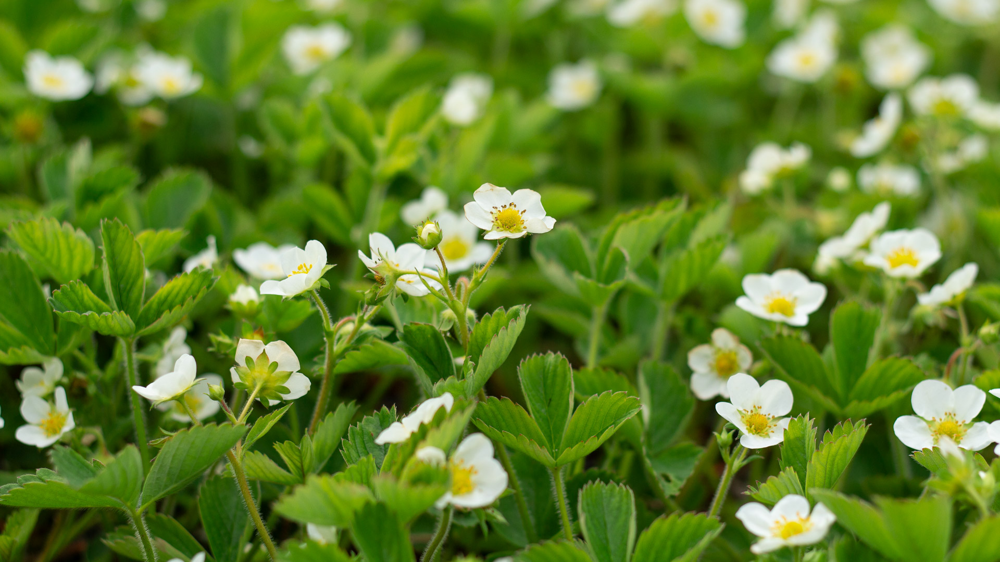

Mansikka
Tuotetiedot
Mansikka (Fragaria x ananassa) on monivuotinen ruohovartinen kasvi, joka kuuluu ruusukasvien (Rosaceae) heimoon. Mansikkaa viljellään sen makeiden ja mehukkaiden marjojen vuoksi, joita käytetään laajalti tuoreina, hilloina, mehuna ja leivonnaisissa.
Kasvupaikka ja -olosuhteet
Mansikka viihtyy parhaiten aurinkoisilla ja suojaisilla paikoilla, joissa on hyvin drained maaperä. Se tarvitsee runsaasti vettä, erityisesti kukinnan ja marjojen kehittymisen aikana.
Hoito-ohjeet
- Varmista riittävä kastelu, erityisesti kuumina kesäpäivinä.
- Lisää orgaanista ainesta maahan parantaaksesi sen rakennetta ja ravinteita.
- Poista rikkaruohot säännöllisesti, jotta mansikat saavat tarvitsemansa ravinteet.
Puutarhamansikka
Fragaria x ananassaLajikkeet
- Kaunotar
- Honeoye
- Maiju
- Jonsok
- Polka
- Lumotar
- Marketta
- Frida
- Korona
- Malwina
- Ria